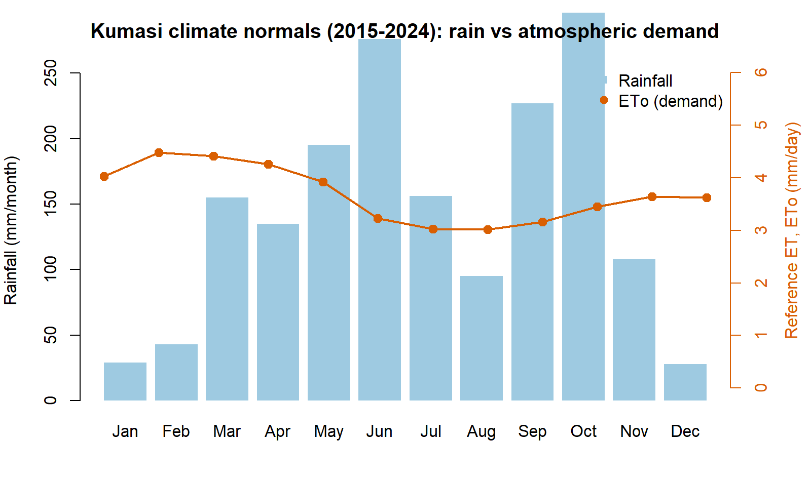
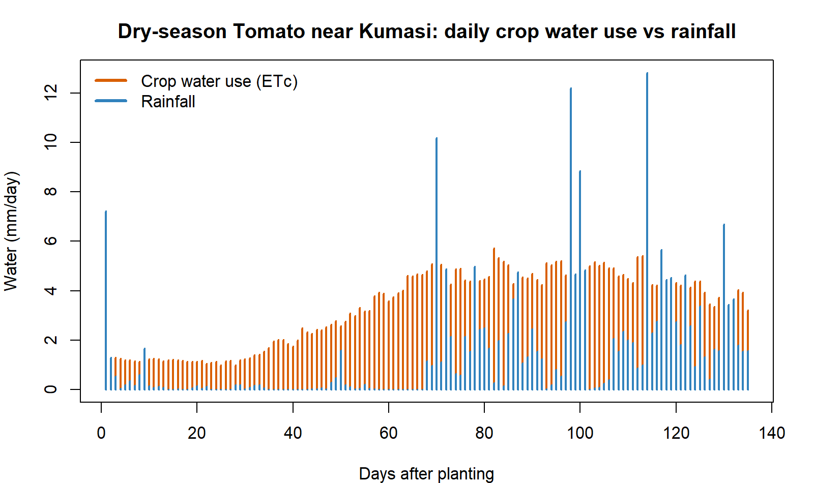
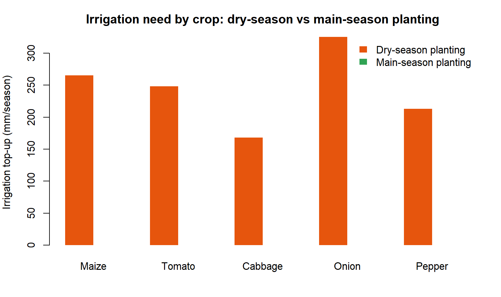
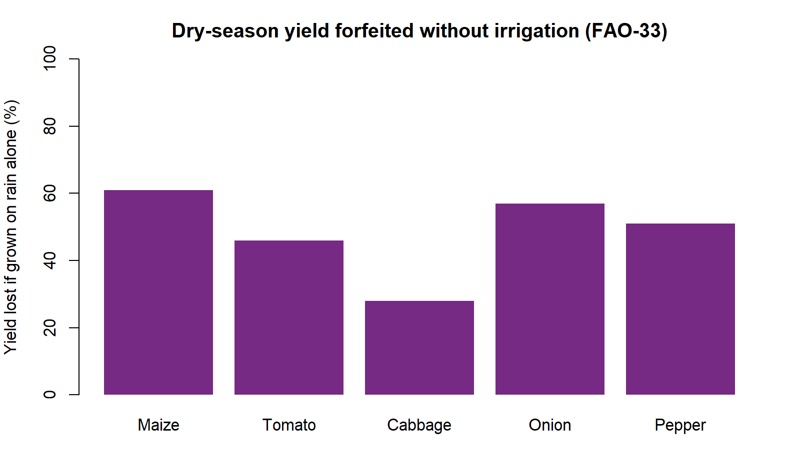

How Much Water Does My Crop Need?
Source:vignettes/articles/crop_water_needs.Rmd
crop_water_needs.RmdA practical guide to crop water and irrigation requirements
for farms near Kumasi — with the sebkc R
package
This is the plain-language companion to the technical
sebkc manual. It has one goal: to help you answer a real
question a farmer, extension officer or student near Kumasi actually
asks —
“If I plant tomatoes (or maize, or onions) on this date, how much water will the crop need, how much will the rain give me, and how much must I add by irrigation?”
You will get real numbers, for real crops, from real weather. You do not need to be a hydrologist. Every equation is set apart in an optional “the maths behind it” note — the R code does the mathematics for you, so you can read past them. If you can copy and run five lines of R, you can do this.
Dr George Owusu Department of Geography and Resource Development, University of Ghana
Companion to: "Evapotranspiration from Weather and Satellites: A Guide to sebkc"
Package: sebkc (>= 1.0-8)
Audience: farmers, extension officers, irrigation planners, agriculture students
You need: basic R (how to run a script). No satellite data. No soil samples.
License: GPL-2Every number and figure in this guide was produced by running the package. The script that regenerates them,
reproduce_water_needs.R, ships in this folder; its console log isrepro_water_needs_output.txtand its figures are infigures/. The numbers were produced on R 4.6.0 withsebkc.
Contents
- The problem, in one picture
- What you need (and what you already have)
- Step 1 — Get the weather (it is already up to date)
- Step 2 — How
thirsty is the air? (
ETo) - Step 3 — How much does my crop drink? (the crop coefficient)
- Step 4 — The crop’s water need for the whole season
- Step 5 — How much must I irrigate? A worked tomato season
- Step 6 — Five crops, two planting seasons, one table
- Step 7 — From water to yield: what the shortage costs
- What the numbers tell a farmer near Kumasi
- Going
further — day-by-day scheduling with
kc - Getting
weather anywhere —
weather()across Africa and beyond - Projects — try it yourself
- Consideration notes on the numbers
- The whole guide in one script
- Equation appendix (for the curious)
- References
1. The problem, in one picture
Kumasi sits in Ghana’s forest zone. Its rain does not fall evenly: there is a long rainy stretch from about March to July, a short break in August, a second peak around September–October, and a genuinely dry Harmattan from December to February when almost no rain falls at all. Meanwhile the air is thirstiest in exactly that dry window — hot, bright days pull water out of leaves and soil fastest.
The city itself is built up, so the “farms near Kumasi” we care about are the market-garden and food plots on its edges — Bomso, Ejisu, Kwadaso, the valleys along the rivers — growing vegetables and maize for the city.
Figure 1 shows the whole problem at a glance: the blue bars are the rain Kumasi can expect in an average month; the orange line is how much water the atmosphere tries to evaporate each day (the “demand”). Where the orange line is high and the blue bars are low — December, January, February — a crop is thirsty and the sky will not help. That gap is what irrigation has to fill.

Figure 1. Kumasi monthly rainfall (blue bars) and reference evapotranspiration, the atmosphere’s water demand (orange line), averaged over 2015–2024. The dry, thirsty Harmattan window — December to February — is where irrigation matters most.
Here are those same normals as a table (mean of 2015–2024, produced by the package):
| Month | ETo (mm/day) | Rain (mm) | Month | ETo (mm/day) | Rain (mm) | |
|---|---|---|---|---|---|---|
| Jan | 4.03 | 29 | Jul | 3.03 | 156 | |
| Feb | 4.48 | 43 | Aug | 3.02 | 95 | |
| Mar | 4.41 | 155 | Sep | 3.16 | 227 | |
| Apr | 4.26 | 135 | Oct | 3.45 | 296 | |
| May | 3.92 | 195 | Nov | 3.64 | 108 | |
| Jun | 3.23 | 276 | Dec | 3.62 | 28 |
Read it and you already understand the punchline of this whole guide: plant in the main rains and the sky waters your crop; plant in the dry season and you must. The rest of the guide just turns that intuition into numbers you can budget with.
2. What you need (and what you already have)
You need three things, and sebkc gives you all
three:
- Weather for Kumasi — bundled with the package, and already brought up to the present for you (Section 3). You do not download anything.
-
A way to turn weather into “atmospheric demand” —
the
ETo()function (Section 4). -
A way to turn demand into a specific crop’s need and its
irrigation gap — the
kc()function (Sections 5–7).
Install the package once:
install.packages("sebkc") # from CRAN
# or the latest version:
# remotes::install_github("gowusu/sebkc")
library(sebkc)That is the whole toolbox. No satellite images, no field sensors.
3. Step 1 — Get the weather (it is already up to date)
The package ships a daily weather record for Kumasi. It used to stop in 2015; it has been extended to the present using NASA’s POWER service, so when you call it you get data right up to a few days ago — no action needed on your part.
kumasi <- readRDS(system.file("extdata", "kc", "kumasi1960_present.rds",
package = "sebkc"))
kumasi$Date <- as.Date(kumasi$DOY)
range(kumasi$Date)
#> [1] "1960-01-01" "2026-07-20"
nrow(kumasi)
#> [1] 24308More than 24,000 days of weather — over 66 years — with everything a water calculation needs: maximum and minimum temperature, humidity, wind, sunshine and rainfall. Each row is one day. That is all the input we will use.
Why this matters. A crop-water calculation is only as current as its weather. Because the record now runs to the present, you can plan for this season, not a season from a decade ago. Section 11 explains how the same one-line
weather()call keeps it current, and how to do it for a different town.
4. Step 2 — How thirsty is the air? (ETo)
Before we talk about any crop, we measure how hard the atmosphere is pulling water out of a standard, well-watered grass field. That standard thirst is called reference evapotranspiration, written ETo, in millimetres per day. A hot, dry, windy day might be 5 mm; a cool, cloudy, humid day 3 mm. It is the same for every crop — it is a property of the weather, not the plant.
ETo() computes it from one day’s weather:
day <- kumasi[kumasi$Date == "2025-01-15", ]
ETo(Tmax = day$Tmax, Tmin = day$Tmin, RHmax = day$RHmax, RHmin = day$RHmin,
n = day$n, uz = day$uz, DOY = "2025-01-15", latitude = 6.72, altitude = 222)$ETo
#> about 4–5 mm on a dry-season dayDo that for every day of a season and you have the atmosphere’s demand, day by day. Over our 2015–2024 normals it averages about 4.0–4.5 mm/day in the dry months and dips to about 3.0 mm/day in the cloudy heart of the rains (Table in Section 1) — the atmosphere is less thirsty when it rains, which is a double blessing.
The maths behind it (optional). ETo()
uses the FAO‑56 Penman–Monteith equation, the world standard:
Here is net radiation, is wind speed, is how dry the air is, and and are constants that depend on temperature. You never type it — the function reads it off the day’s weather (Allen et al. 1998).
5. Step 3 — How much does my crop drink? (the crop coefficient)
A crop does not use the full atmospheric demand at every stage of its life. A tomato seedling with two leaves shades almost no ground and uses little water; a tomato bush in full flower covers the soil and drinks nearly as much as the atmosphere demands; a ripening plant closes down again.
We capture that with one dimensionless number, the crop
coefficient Kc. Multiply the atmosphere’s demand
by Kc and you get this crop’s water use:
the crop’s water use = Kc × ETo
Kc is small early, rises to a peak in mid-season, and
falls near harvest. FAO‑56 gives three anchor values for every crop —
initial, mid-season and end — and the lengths of the four growth stages.
Here are the five crops we will use, straight from FAO‑56 Tables 11 and
12:
| Crop | Kc (start / peak / end) | Stage lengths (days) | Total | Root depth (m) |
|---|---|---|---|---|
| Maize (grain) | 0.30 / 1.20 / 0.35 | 20 · 35 · 40 · 30 | 125 | 1.0 |
| Tomato | 0.60 / 1.15 / 0.80 | 30 · 40 · 40 · 25 | 135 | 0.9 |
| Cabbage | 0.70 / 1.05 / 0.95 | 40 · 60 · 50 · 15 | 165 | 0.6 |
| Onion (dry) | 0.70 / 1.05 / 0.75 | 15 · 25 · 70 · 40 | 150 | 0.45 |
| Pepper (bell) | 0.60 / 1.05 / 0.90 | 30 · 35 · 40 · 20 | 125 | 0.7 |
You give those numbers to kc() and it builds the
day-by-day Kc curve for you. We pass them in by hand rather
than by crop name so that you can see exactly what assumptions
the answer rests on — and so you can change them for your own
variety.
The maths behind it (optional). Between the
mid-season plateau and harvest, Kc slides in a straight
line from its mid value to its end value:
The package also nudges the peak up or down for local wind and humidity. Again — you never type it.
6. Step 4 — The crop’s water need for the whole season
Now put Steps 2 and 3 together. For a chosen crop and planting date,
kc() walks through the season one day at a time: it takes
that day’s ETo, multiplies by that day’s Kc,
and adds it up. The seasonal total is the crop water
requirement, ETc — the amount of water, in
millimetres, the crop will transpire and evaporate from planting to
harvest.
# daily ETo for the season (a helper; see the reproduce script)
season <- season_eto(start = "2024-11-15", ndays = 135) # dry-season tomato
tomato <- kc(ETo = season$ETo, P = season$P, RHmin = 63.5, soil = "sandy loam",
crop = "Tomato", I = 0, kctype = "single",
kc = c(0.60, 1.15, 0.80), lengths = c(30, 40, 40, 25),
Zr = 0.9, p = 0.40, h = 0.6)
sum(tomato$output$ETc) # crop water requirement for the season, mm
#> 443So a dry-season tomato crop near Kumasi needs about 443 mm of water over its 135‑day life — a little over 3.3 mm every day on average, peaking near 5.7 mm/day in mid-season. That peak is the number an irrigation engineer cares about most: your pump, drip line or watering schedule has to be able to deliver ~6 mm/day at the busiest time, even if the average is lower.
7. Step 5 — How much must I irrigate? A worked tomato season
The crop needs 443 mm. The sky provides some of it. Irrigation is the gap.
Over that same November-to-March tomato season the rain gauge collects only about 194 mm — this is a dry-season planting, so most of the water has to come from you:
irrigation top-up ≈ crop need − rainfall = 443 − 194 ≈ 250 mm
Figure 2 shows why the gap opens up. The orange bars are the crop’s daily water use climbing as the plants grow; the blue bars are rainfall — frequent early, then drying up. After the first few weeks the crop is drinking steadily while the sky has gone quiet.

Figure 2. Daily crop water use (ETc, orange) and rainfall (blue) for a tomato crop planted 15 November near Kumasi. The crop’s thirst rises through the season while dry-season rainfall fades — the space between them is what irrigation must supply.
Breaking the season into its four growth stages shows when the water is needed, which is how you plan a watering calendar:
| Stage | Days | Crop need (mm) | Rain (mm) | Irrigation (mm) |
|---|---|---|---|---|
| Initial (seedlings) | 30 | 35 | 13 | 22 |
| Development (growing) | 40 | 119 | 16 | 103 |
| Mid-season (flower/fruit) | 40 | 189 | 89 | 100 |
| Late (ripening) | 25 | 99 | 76 | 23 |
| Season | 135 | 443 | 194 | ≈248 |
The message is clear: the development and mid-season stages carry almost all the irrigation load (about 200 of the 250 mm). Skimp on water then — when the plant is building its frame and setting fruit — and yield falls hardest. The seedling and ripening stages are cheap.
8. Step 6 — Five crops, two planting seasons, one table
Do exactly the same for five common near-Kumasi crops, once planted in the dry season (15 November 2024) and once in the main rains (15 March 2025). This single table is the heart of the guide:
| Crop | Season | Days | ETo (mm) | Crop need ETc (mm) | Avg (mm/day) | Peak (mm/day) | Rain (mm) | Irrigation (mm) |
|---|---|---|---|---|---|---|---|---|
| Maize | dry | 125 | 512 | 435 | 3.5 | 5.9 | 171 | 265 |
| Tomato | dry | 135 | 554 | 443 | 3.3 | 5.7 | 194 | 248 |
| Cabbage | dry | 165 | 680 | 471 | 2.9 | 5.2 | 302 | 168 |
| Onion | dry | 150 | 617 | 557 | 3.7 | 5.3 | 232 | 325 |
| Pepper | dry | 125 | 512 | 383 | 3.1 | 5.2 | 171 | 213 |
| Maize | main | 125 | 466 | 488 | 3.9 | 6.1 | 742 | 0 |
| Tomato | main | 135 | 494 | 525 | 3.9 | 5.8 | 759 | 0 |
| Cabbage | main | 165 | 578 | 601 | 3.6 | 5.7 | 824 | 0 |
| Onion | main | 150 | 535 | 535 | 3.6 | 5.6 | 805 | 0 |
| Pepper | main | 125 | 466 | 476 | 3.8 | 5.7 | 742 | 0 |
Figure 3 draws the last column: irrigation need, dry-season planting versus main-season planting.

Figure 3. Seasonal irrigation top-up for each crop when planted in the dry season (orange) versus the main rains (green). In the main season, seasonal rainfall meets or exceeds the crop’s need, so the top-up is essentially zero.
9. Step 7 — From water to yield: what the shortage costs
Water is not the goal; harvest is. Two short calculations turn the water numbers into yield numbers — the language a farmer actually budgets in.
(a) What could the crop yield at best? The
biomass() function estimates a crop’s potential yield from
the sunlight and temperature of the growing season — the ceiling a
well-watered, well-managed crop can reach. For maize near Kumasi:
# season-average daytime temp, 24-h temp and solar radiation feed biomass()
biomass(Tday = 28.6, T24 = 26.6, Rs = 17.3, latitude = 6.72, HI = 0.40,
plantdate = "2025-03-15", harvestdate = "2025-07-18", crop = "maize")$yield
#> about 3.2 t/ha of grainThe potential comes out near 3.1–3.2 t/ha of grain in either season — the dry season is a little sunnier (Rs 18.5 vs 17.3 MJ/m²/day) but a little hotter, so the ceiling is about the same. The difference between the seasons is not the ceiling — it is whether you reach it.
(b) How much of that harvest does a water shortage cost? FAO’s water–yield rule says the share of yield you lose is proportional to the share of water the crop misses, scaled by a crop sensitivity factor Ky:
yield lost (%) ≈ Ky × water shortage (%)
Run each dry-season crop on rain alone (no irrigation) and read off how much water it misses, then how much yield that costs:
| Crop | Ky | Water it misses on rain alone | Yield lost if not irrigated |
|---|---|---|---|
| Maize | 1.25 | 49% | 61% |
| Onion | 1.10 | 51% | 57% |
| Pepper | 1.10 | 47% | 51% |
| Tomato | 1.05 | 44% | 46% |
| Cabbage | 0.95 | 30% | 28% |

Figure 4. The share of potential yield lost when a dry-season crop near Kumasi is grown on rainfall alone, with no irrigation (FAO-33 water–yield relation). Every crop loses at least a quarter of its harvest; maize and onion lose well over half.
This is the real argument for the irrigation numbers in Section 8. Dry-season maize left to the rain does not just “look thirsty” — it throws away about 61% of its grain. The ~265 mm of irrigation it needs is what buys that harvest back. Sensitive crops (high Ky — maize, onion) punish under-watering hardest; hardy ones (cabbage) forgive it.
The maths behind it (optional). Potential biomass follows the FAO Agro-Ecological Zone light-use model, and yield is , where is the harvest index. The water–yield loss is the FAO-33 relation:
Here is actual over maximum yield and is actual over full crop water use.
10. What the numbers tell a farmer near Kumasi
You can now give straight answers to real decisions:
- The dry season is an irrigation season, full stop. Any of these crops planted in November needs roughly 170–325 mm of applied water — that is 1.7 to 3.25 million litres per hectare across the season (1 mm = 10 m³ = 10,000 L per hectare). If you cannot supply that, do not plant that crop then.
- The main season is (almost) free water. Planted in March, every one of these crops is met by the rains — the irrigation column is zero. Main-season cropping needs drainage thinking, not irrigation thinking. (Watch short dry spells, but the seasonal budget is safe.)
- Onions are the thirstiest to irrigate; cabbage the kindest. Dry-season onions need the most top-up (~325 mm) — a long season and shallow roots. Cabbage needs the least (~168 mm) because its longest, thirstiest weeks catch the returning rains.
- Size your system to ~6 mm/day. Across every crop the peak daily need lands near 5–6 mm/day. A drip or sprinkler system (and your labour) must be able to deliver about 6 mm/day per hectare = 60 m³/day at mid-season, even though the average is lower.
- Spend your water in the middle. As the tomato stage table showed, the development and mid-season stages carry most of the irrigation and reward it with yield. Protect those weeks.
11. Going further — day-by-day scheduling with kc
The seasonal totals above answer “how much water?”. To
answer “which day do I water, and how much?” let
kc() run its full daily soil-water
balance. It tracks how much water the root zone holds, how rain
refills it, how the crop draws it down, and flags the day the soil dries
to the point the crop starts to feel stress:
tomato$output[ , c("Day", "ETc", "P", "Drend", "Ks")] # daily balance-
ETc— the crop’s water use that day. -
P— rain that day. -
Drend— how empty the root zone is by day’s end (mm of “room” to refill). -
Ks— a stress flag:1.0means comfortable, below1.0means the crop is running short. Irrigate beforeKsdrops below 1.
One practical warning this daily view reveals: shallow-rooted crops need frequent watering even in the rainy season. A deep-rooted maize plant banks a big rain for a week; a shallow onion cannot, so it can go short a few dry days after a downpour. If you grow onions or lettuce in the minor rains, plan to water little and often rather than trusting the seasonal surplus.
The full mechanics of this balance — readily available water, stress coefficient, deep percolation, the dual crop coefficient that splits soil evaporation from transpiration — are in the technical manual, “Evapotranspiration from Weather and Satellites: A Guide to sebkc.”
12. Getting weather anywhere — weather() across Africa
and beyond
Nothing in this guide is special to Kumasi except the
coordinates. The bundled Kumasi record from 1960–2015 is the
historical station series; from 2016 it is extended with NASA
POWER daily data — a free, global, satellite-and-model weather
service — fetched through the package’s own weather()
function. That is why “calling Kumasi data” already gives you an
up-to-date record. The same one function builds the identical
record for any place on Earth.
The one call you need
weather() needs only a longitude and a latitude (west
and south are negative) and a date range:
# Tamale, northern Ghana (lat 9.40, lon -0.84)
tamale <- weather(longitude = -0.84, latitude = 9.40,
NASA.SSE = list(from = "2016-01-01", to = "2026-07-20"))
wx <- tamale$NASA.SEE$data # a data frame: Tmax Tmin RH uz Rs P date ...
head(wx)That wx data frame drops straight into the same
ETo() → kc() → biomass()
steps you have just followed. Change two numbers, get a full
crop-water-needs assessment for a new place.
A starter set of locations
Here are working coordinates across Africa and beyond — copy a row and go. (South of the equator the latitude is negative; west of Greenwich the longitude is negative.)
| Place | Country / region | Latitude | Longitude |
|---|---|---|---|
| Kumasi | Ghana (forest) | 6.72 | −1.60 |
| Tamale | Ghana (savanna) | 9.40 | −0.84 |
| Accra | Ghana (coast) | 5.60 | −0.19 |
| Ouagadougou | Burkina Faso (Sahel) | 12.37 | −1.53 |
| Kano | Nigeria (Sahel) | 12.00 | 8.52 |
| Bamako | Mali | 12.64 | −8.00 |
| Nairobi | Kenya (highland) | −1.29 | 36.82 |
| Addis Ababa | Ethiopia (highland) | 9.03 | 38.74 |
| Lusaka | Zambia | −15.42 | 28.28 |
| Cairo | Egypt (arid) | 30.04 | 31.24 |
| Fresno | California, USA | 36.74 | −119.77 |
| New Delhi | India | 28.61 | 77.21 |
# loop the whole starter set and pull each place's weather in one go
sites <- data.frame(
place = c("Tamale","Ouagadougou","Nairobi","Cairo","Fresno"),
lat = c( 9.40, 12.37, -1.29, 30.04, 36.74),
lon = c(-0.84, -1.53, 36.82, 31.24, -119.77))
wx_all <- lapply(seq_len(nrow(sites)), function(i)
weather(longitude = sites$lon[i], latitude = sites$lat[i],
NASA.SSE = list(from = "2024-01-01", to = "2024-12-31"))$NASA.SEE$data)
names(wx_all) <- sites$placeEach place’s climate is different — Cairo is bone dry and thirsty, Nairobi mild, Fresno a Mediterranean irrigation belt — so each will give its own crop-water and irrigation answer from the very same code. The method is genuinely global.
Prefer a spreadsheet? Get the same data by hand
If you would rather not code the download, NASA POWER offers the identical data through a point-and-click map:
- POWER Data Access Viewer — https://power.larc.nasa.gov/data-access-viewer/ (pick a point, choose Daily, tick temperature, humidity, wind, radiation and precipitation, download CSV).
- POWER homepage and API docs — https://power.larc.nasa.gov.
- Other free daily sources you can feed in the same way: Open-Meteo (https://open-meteo.com), ERA5 via Copernicus CDS (https://cds.climate.copernicus.eu), and NOAA Climate Data Online (https://www.ncei.noaa.gov/cdo-web/).
Whichever route you take, line the columns up as
Tmax, Tmin, RHmax, RHmin, n (or
Rs), uz, P and the rest of this guide runs
unchanged.
13. Projects — try it yourself
Short projects to turn this guide into skill. Each one is a small change to the code you already have; none needs new tools. They make good class exercises or a first real piece of analysis.
Your own town. Pick a place from the Section 12 table (or your village’s coordinates) and redo the five-crop, two-season table for it. How does its irrigation bill compare with Kumasi’s?
Best planting date. For one crop, slide the planting date across the year in two-week steps and plot the seasonal irrigation need against planting date. When is the cheapest month to plant?
A wet year vs a dry year. The Kumasi record runs from 1960. Pick a known wet year and a known dry year, run the same dry-season tomato in each, and compare the irrigation and the yield loss.
Size a reservoir. Convert one crop’s seasonal irrigation (mm) into cubic metres for a 2-hectare farm (1 mm = 10 m³/ha) and add a 25% allowance for losses. How big a tank or dugout do you need to carry the dry season?
The yield-loss curve. For maize, run it at 0%, 25%, 50%, 75% and 100% of full irrigation and plot yield loss (FAO-33) against water applied. Where is the “most crop per drop” sweet spot?
Deep vs shallow roots. Run onion (shallow) and maize (deep) in the main season and use the daily
kc()balance (Section 11) to count how many days each falls under stress despite the rain.Climate creep. Compare average
ETofor 1971–1980 against 2011–2020 from the bundled record. Has the atmosphere’s demand near Kumasi shifted, and what would that add to irrigation?Two crops, one season. Budget the water for an intercrop or a relay (e.g. maize followed by cabbage) and report the combined irrigation and the peak daily demand your system must meet.
14. Consideration notes on the numbers
So you can trust — and defend — these figures:
- They are point estimates for one location and two specific planting dates (Nov 2024, Mar 2025). A different year’s rain will move the irrigation column; the dry-season pattern (irrigation essential) and the main-season pattern (rain-fed) are robust, the exact millimetres are not a guarantee.
- The simple irrigation figure is “crop need − rainfall.” It treats the seasonal rain total as usable. In reality some rain runs off or drains below the roots, so real irrigation is a little higher than the simple number — the daily balance in Section 11 refines it.
- Kc values are FAO‑56 tabulated defaults. Your variety, spacing and management can shift them. They are excellent planning values, not field measurements — swap in your own if you have them.
-
ETois only as good as the weather. POWER is a gridded product (~50 km); it is superb for planning and trend, but a nearby station reading, if you have one, is closer to your field.
None of this changes the headline a farmer needs: dry-season vegetables near Kumasi need roughly 170–325 mm of irrigation; the same crops in the main rains need next to none.
15. The whole guide in one script
Everything above — every number, table and figure — is produced by a
single script that ships in this folder,
reproduce_water_needs.R. Run it and you reproduce this
guide exactly:
# from the manual/ folder
source("reproduce_water_needs.R")It (1) loads the up-to-date Kumasi record, (2) computes daily
ETo, (3) runs kc() for the five crops in two
seasons, (4) estimates yield with biomass() and the FAO-33
water–yield rule, (5) prints the tables you have seen, and (6) writes
the four figures into figures/. Its console log is saved as
repro_water_needs_output.txt.
16. Equation appendix (for the curious)
Collected here so the body stays readable. You never type any of
these — sebkc does.
Reference evapotranspiration (FAO‑56 Penman–Monteith):
Crop water use:
Seasonal crop water requirement:
Simple net irrigation requirement:
Volume conversion (per hectare):
Sunshine hours from solar radiation (used to keep the modern weather homogeneous with the historical record; Ångström–Prescott, inverted):
Yield lost to water shortage (FAO-33):
17. References
- Allen, R. G., Pereira, L. S., Raes, D., & Smith, M. (1998). Crop Evapotranspiration: Guidelines for Computing Crop Water Requirements. FAO Irrigation and Drainage Paper 56. Rome: FAO.
- Doorenbos, J., & Kassam, A. H. (1979). Yield Response to Water. FAO Irrigation and Drainage Paper 33. Rome: FAO. (The water–yield factor Ky used in Section 9.)
- Owusu, G. sebkc: Surface Energy Balance and Crop Coefficient ET [R package]. CRAN / https://github.com/gowusu/sebkc.
- NASA POWER Project. Prediction of Worldwide Energy Resources — Daily data. https://power.larc.nasa.gov.
- Companion volume: Owusu, G. Evapotranspiration from Weather and
Satellites: A Guide to the sebkc R Package (the technical
sebkcmanual,sebkc_manual.html).